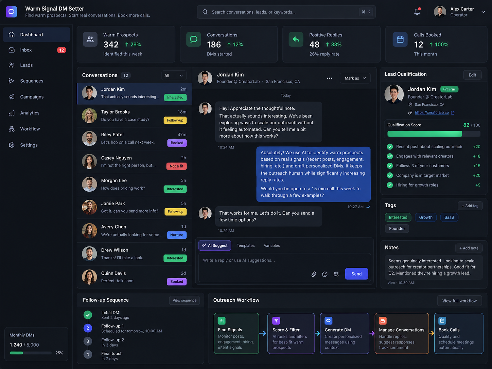

Lead Generation Automation
Warm Signal DM Setter
Built to identify warm prospects from live signals, personalize outreach, and move conversations toward booked calls.
Business problem
Many outbound teams waste time on cold lists, low-fit prospects, and generic messaging.
How I approached it
This system qualifies leads based on behavioral and contextual signals, drafts personalized DMs, supports follow-up logic, and keeps the pipeline organized from first contact to call booking.
Best-fit use case
Ideal for agencies, consultants, service providers, and founder-led sales teams that rely on relationship-based prospecting.
System components
Signal scoring, outreach workflow design, follow-up orchestration, qualification logic, inbox handling, booking flow.
Relevant tools / environment
Make, Zapier, CRM logic, messaging workflows, dashboards
Skills demonstrated
Outbound strategyLead qualificationPersonalized DM automationReply handlingSales workflow design